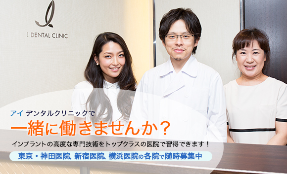

インプラントならアイデンタルクリニック トップページ > 求人のご案内

アイデンタルクリニックは首都圏に3医院（神田・新宿・横浜）を展開している、 日本トップクラスのインプラント専門歯科医院です。
当クリニックは年間5,500本以上、累計20,000本以上のインプラント施術実績があり、 施術後のアンケート調査でも97%が「満足・大変満足」と患者さまから高い評価をいただいております。
これもひとえに当クリニックの理念である「Wonderful Smile for Everyone」のもと、 低価格かつ高品質な医療サービスを提供し、職員全員が患者さんのために努力している結果だと 思っております。
外部評価でも、オリコン顧客満足度ランキング「インプラント歯科医院 コストパフォーマンス部門」 で第１位を獲得しております。
全医院にCTを完備、滅菌・ディスポーザブル対応、麻酔医の常駐、最長10年保証など、 患者さまの安心・安全を最優先とした体制はもちろん、 ノーベルバイオケア、JMMを中心に実績のあるインプラントのみを使用しております。
また、初回来院時のCT撮影・診断・カウンセリングまですべて無料で実施している点も大変好評です。
現在、業績拡大につき東京・神田医院、新宿医院、横浜医院の各院で、歯科医師・麻酔医・歯科衛生士・歯科助手・歯科技工士 を随時募集中です。
アイデンタルクリニックで一緒に働いてくださる方のご応募を職員全員、心からお待ちしております。
当クリニックでは、新しく入社された方向けの研修プログラムが完備しており、当クリニックの理念、組織、インプラントの基礎知識、手技、患者さま対応等についてスムーズに習得していただけます。
その他、スキルアップのための内部研修や各種カンファレンスでの症例研究、大学教授を招いてのセミナーなど、充実した内部研修に加え、インプラントメーカーが主催する各種講習会などに当クリニック負担で参加してもらうなど、職員のスキルアップを全面的に支援しております。
月１回の全体朝礼やその後の職種ごとのカンファレンスなどで、常に当クリニックのビジョンや方向性の共有、最新技術の習得やＣＳ向上などに積極的に取り組んでおります。
業務以外でも、医院を超えたイベントがたくさんあり、たくさんの人と交流する機会が盛りだくさんです。
各医院での飲み会やバーベキュー、ホームパーティーなどの自発的な懇親は日常茶飯事で、職員の仲が良く家族的な雰囲気が当クリニックの特徴です。
その他、東京湾ナイトクルージングなど、楽しい全体イベントも定期的に開催しており、職員から大変好評です。
| 勤務医院 | 神田医院 | 新宿医院 | 横浜医院 |
|---|---|---|---|
| 勤務地 | 東京都千代田区内神田3-21-6 山喜ビル2階 | 東京都新宿区新宿4-2-16 パシフィックマークス新宿サウスゲート 4階 | 神奈川県横浜市西区北幸1-1-8 エキニア横浜8F |
| 最寄駅 | JR神田駅 地下鉄神田駅 徒歩1分 | JR新宿駅徒歩2分、新宿三丁目駅E5出口より徒歩30秒 | JR横浜駅 徒歩1分 |
| 雇用形態 | 正社員 ※非常勤のご希望も受け付けます | ||
| 応募条件 | ・インプラント治療経験者の方を優遇します。 ・ご経験がない方も歓迎します。当クリニックでは研修制度が充実してますのでご心配はいりません。 | ||
| 勤務時間 | 10：00～19：00 | 10：00～19：00 | 10：00～19：00 |
| 休憩時間 | 60分 | ||
| 休日・休暇 | 日曜・祝祭日、その他1日 週休2日制、年末年始休暇（5日程度）、有給休暇（初年度10日） | ||
| 報酬 （月給） | 歯科医師 ：30万円～150万円 麻酔医 ：50万円～100万円 歯科衛生士 ：23万円～45万円 歯科助手 ：20万円～45万円 歯科技工士 ：20万円～45万円 ※上記は目安であり、経験・能力等によりご相談の上、決定いたします。 | ||
| 保険 福利厚生 | 社会保険、厚生年金、雇用保険、労災保険等完備、健康診断全額負担、 交通費全額支給、各種研修制度、MVP表彰制度、他 | ||
当クリニックにご応募される方は、履歴書・職務経歴書をご記入の上、以下のご連絡先に郵送してください。
〇ご連絡先
〒101-0047
東京都千代田区内神田3-21-6 山喜ビル2階
医療法人社団 皆星会 事務局
採用担当宛
TEL：03-5289-3205 FAX：03-5289-3207
〇応募書類
・履歴書
・職務経歴書
その他、採用に関するご質問につきましてもお気軽にお問い合わせください。